VisualMimic：通过运动跟踪与生成实现视觉人形移动操作
VisualMimic: Visual Humanoid Loco-Manipulation via Motion Tracking and Generation
第 1 页Page 1PDF p.1
VisualMimic
核对原版排版
VisualMimic
Visual Humanoid Loco-Manipulation via Motion Tracking and Generation
核对原版排版
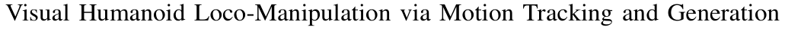
基于动作跟踪与生成的人形机器人视觉移动操作
Shaofeng Yin* Yanjie Ze* Hong-Xing Yu C. Karen Liu† Jiajun Wu† *Equal Contribution † Equal Advising Stanford University
核对原版排版
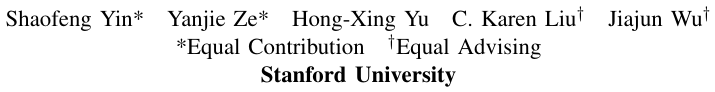
Shaofeng Yin* Yanjie Ze* Hong-Xing Yu C. Karen Liu† Jiajun Wu† *共同贡献 †共同指导 Stanford University
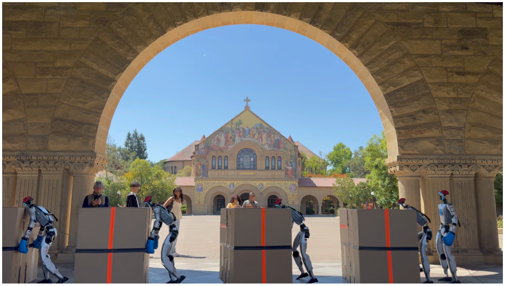
Fig. 1: We present VisualMimic, a visual sim-to-real framework for whole-body humanoid loco-manipulation. Videos are available at visualmimic.github.io.
核对原版排版
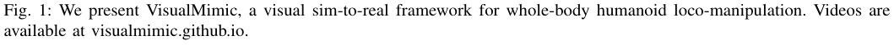
图 1：我们提出了 VisualMimic，一个用于人形机器人全身移动操作的视觉仿真到现实迁移框架。视频可在 visualmimic.github.io 查看。
Abstract — Humanoid loco-manipulation in unstructured environments demands tight integration of egocentric perception and whole-body control. However, existing approaches either depend on external motion capture systems or fail to generalize across diverse tasks. We introduce VisualMimic, a visual simto-real framework that unifies egocentric vision with hierarchical whole-body control for humanoid robots. VisualMimic combines a task-agnostic low-level keypoint tracker—trained from human motion data via a teacher-student scheme— with a task-specific high-level policy that generates keypoint commands from visual and proprioceptive input. To ensure stable training, we inject noise into the low-level policy and clip high-level actions using human motion statistics. VisualMimic enables zero-shot transfer of visuomotor policies trained in simulation to real humanoid robots, accomplishing a wide range of loco-manipulation tasks such as box lifting, pushing, football dribbling, and kicking. Beyond controlled laboratory settings, our policies also generalize robustly to outdoor environments.
核对原版排版
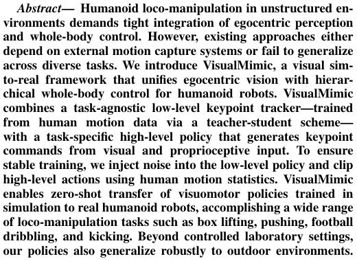
摘要——非结构化环境中的人形机器人移动操作需要自我中心感知与全身控制的紧密结合。然而，现有方法要么依赖外部动作捕捉系统，要么难以泛化到多样化任务中。我们提出了 VisualMimic，一个将自我中心视觉与分层全身控制相结合的人形机器人视觉仿真到现实迁移框架。VisualMimic 将通过教师-学生方案利用人类动作数据训练得到的任务无关底层关键点跟踪器，与基于视觉和本体感觉输入生成关键点指令的特定任务高层策略相结合。为确保训练的稳定性，我们在底层策略中注入噪声，并利用人类动作统计数据对高层动作进行截断裁剪。VisualMimic 实现了在仿真中训练的视觉运动策略向真实人形机器人的零样本迁移，能够完成抬箱、推箱、足球运球和踢球等广泛的移动操作任务。除受控实验室环境外，我们的策略还能稳健地泛化到室外环境中。
1Work was done during Shaofeng Yin’s internship at Stanford University. Shaofeng is now with Tsinghua University.
核对原版排版
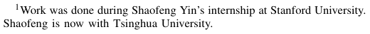
1 该工作是在 Shaofeng Yin 于 Stanford University 实习期间完成的。Shaofeng 现就职于 Tsinghua University。
Videos are available at: visualmimic.github.io
核对原版排版
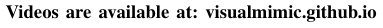
视频可在以下网址获取：visualmimic.github.io
I. INTRODUCTION
核对原版排版
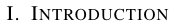
I. 引言
How do humans manage to push a box that is too heavy to move with only their arms? We start with vision perception to localize the box and rely on visual feedback to guide our interaction with the box. To generate sufficient force, we might bend down and push with our hands, lean in with the strength of our arms and shoulders, or even nudge the box forward with our feet. In such cases, every part of the body can be brought into play to accomplish the task. These strategies underscore two fundamental aspects of human loco-manipulation: egocentric visual perception and whole-body dexterity.
核对原版排版
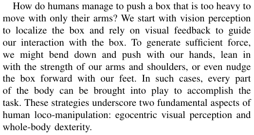
人类是如何推动一个仅凭双臂难以挪动的沉重箱子的？我们首先通过视觉感知来定位箱子，并依靠视觉反馈来指导与箱子的交互。为了产生足够的力量，我们可能会俯身用双手推、借助手臂和肩膀的力量前倾发力，甚至用脚将箱子向前顶推。在这些情况下，身体的每个部位都可以协同参与以完成任务。这些策略突显了人类移动操作的两个基本要素：自我中心视觉感知和全身灵巧性。
Equipping humanoid robots with such human-like object interaction abilities has been a long-standing challenge. Current approaches can be categorized into three main paradigms based on tasks: First, locomotion-focused methods [1], [2]
核对原版排版
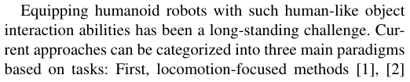
赋予人形机器人这种类似人类的物体交互能力一直是一项长期挑战。根据任务类型，当前的方法主要可分为三种范式：第一类是以步态运动（locomotion）为重点的方法 [1], [2]，
展开第 1 页原版整页（含全部图表、公式与页眉页脚）
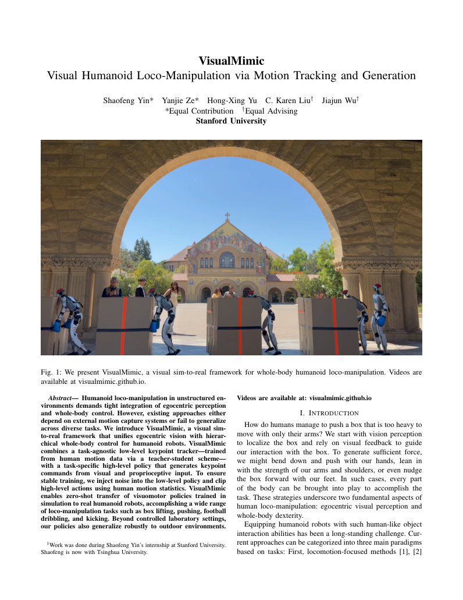
第 2 页Page 2PDF p.2
that excel at terrain traversal but do not address object interaction. Second, approaches that rely on external motion capture systems [3], [4] for object state estimation, restricting their deployment to controlled laboratory environments. Third, vision-based methods for object interaction, which follow two distinct paths: 1) imitation learning approaches [5]–[7] that train visuomotor policies via human demonstrations, which are constrained by the scarcity of large-scale demonstration data and result in limited generalization capabilities; and 2) sim-to-real reinforcement learning (RL) methods [8], [9] that offer greater robustness and generalizability; however, vision-based RL is currently limited to simple environmental interactions such as sitting [8] and stair climbing [8], [9], falling significantly short of humanlevel object interaction abilities, due to the large exploration and action space of humanoid robots.
核对原版排版
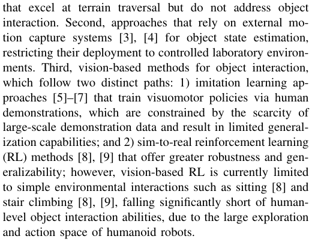
它们擅长地形穿越，但并不涉及物体交互。第二类是依赖外部动作捕捉系统 [3], [4] 进行物体状态估计的方法，这限制了其只能部署在受控的实验室环境中。第三类是基于视觉的物体交互方法，主要遵循两条不同路线：1) 模仿学习方法 [5]–[7]，通过人类示范训练视觉运动策略，但受限于大规模示范数据的稀缺，导致泛化能力有限；2) 仿真到现实迁移强化学习（RL）方法 [8], [9]，具有更强的稳健性和泛化性；然而，由于人形机器人庞大的探索与动作空间，基于视觉的强化学习目前仅限于坐下 [8] 和爬楼梯 [8], [9] 等简单的环境交互，远未达到人类水平的物体交互能力。
We aim to take one step forward on the pathway of simto-real RL for visual humanoid-object interaction. To make sim-to-real RL generalize better, we adopt a hierarchical design comprising low-level and high-level policies. In such a hierarchical framework, the task-agnostic low-level policy takes care of balanced control and tracks the command sent by the high-level policy, and the task-specific high-level policy generates simplified tracking commands conditioning on egocentric vision input. This design enables more effective task-specific training. We formulate the command interface as body keypoints (root, hands, feet, head) to ensure both compactness and expressiveness.
核对原版排版
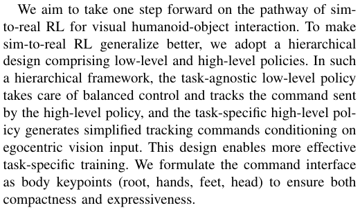
我们的目标是在面向视觉人形机器人-物体交互的仿真到现实迁移强化学习道路上更进一步。为了使仿真到现实迁移强化学习具有更好的泛化性，我们采用了由底层策略和高层策略组成的分层设计。在这一分层框架中，任务无关的底层策略负责平衡控制并跟踪高层策略发送的指令，而特定任务的高层策略则以自我中心视觉输入为条件生成简化的跟踪指令。该设计实现了更高效的特定任务训练。我们将指令接口构建为身体关键点（根关节 root、双手、双脚、头部），以兼顾紧凑性与表达能力。
To obtain a low-level keypoint tracker that performs human-like behaviors while tracking commands, we curate human motion data and supervise the tracker via motion imitation rewards. However, because keypoint commands alone do not capture the entirety of human motion, we observe that the keypoint tracker can track target keypoints while not perfectly producing human-like behaviors. To address this problem, we adopt a teacher–student training scheme: 1) We first train a motion tracker with full access to current and future whole-body motions, thereby capable of precisely following human reference motions; 2) We then distill this motion tracker into a keypoint tracker that operates on simplified keypoint commands. By doing so, our keypoint tracker captures human motion behaviors while still maintaining a compact command space. Notably, our keypoint tracker is task-agnostic and shared across tasks once trained.
核对原版排版
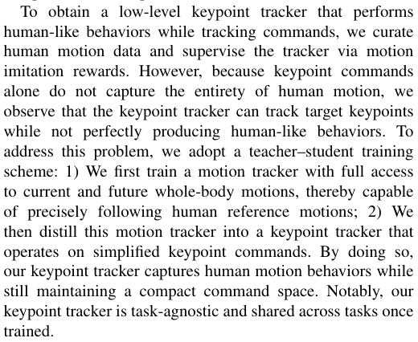
为了获得一个在跟踪指令的同时能展现出类人行为的底层关键点跟踪器，我们整理了人类动作数据，并通过动作模仿奖励对跟踪器进行监督。然而，由于仅凭关键点指令无法捕捉人类动作的全部细节，我们观察到关键点跟踪器虽然能够跟踪目标关键点，但未能完美产生类人行为。为解决这一问题，我们采用了教师-学生训练方案：1) 首先训练一个能够完全访问当前和未来全身动作的动作跟踪器，从而能够精确跟随人类参考动作；2) 然后将该动作跟踪器蒸馏为基于简化关键点指令运行的关键点跟踪器。通过这种方式，我们的关键点跟踪器在保持紧凑指令空间的同时，成功捕捉到了人类动作行为。值得注意的是，我们的关键点跟踪器是任务无关的，一旦训练完成即可跨任务共享复用。
Built upon this general keypoint tracker, we train a highlevel keypoint generator via sim-to-real RL. Directly training polices via visual RL significantly slows down the training and leads to non-optimal solutions. Therefore, we also apply a teacher–student scheme: 1) We first train a state-based policy with privileged access to object states, enabling them to solve tasks effectively; 2) We then distill the state-based policy into the visuomotor policy that rely solely on egocentric vision and robot proprioception, making it ready for realworld deployment without external object state estimation. To address the large visual sim-to-real gap (Fig. 8), we apply heavy masking to depth images in simulation, approximating
核对原版排版
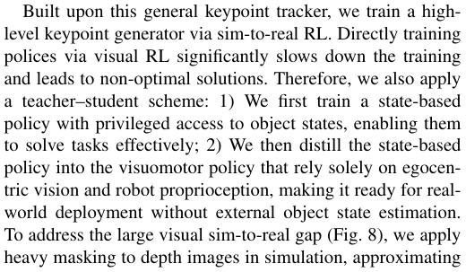
基于该通用关键点跟踪器，我们通过仿真到现实迁移强化学习训练高层关键点生成器。直接通过视觉强化学习训练策略会显著减慢训练速度并导致次优解。因此，我们也采用了教师-学生方案：1) 首先训练一个具有物体状态特权访问权限的基于状态的策略，使其能够高效完成任务；2) 然后将该基于状态的策略蒸馏为仅依赖自我中心视觉和机器人本体感觉的视觉运动策略，从而无需外部物体状态估计即可直接用于真实世界部署。为解决巨大的视觉仿真到现实差距（图 8），我们在仿真中对深度图像应用了重度掩码（masking），以近似
TABLE I: Comparison of methods of different features.
核对原版排版
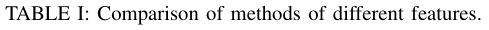
表 I：不同特征方法的比较。
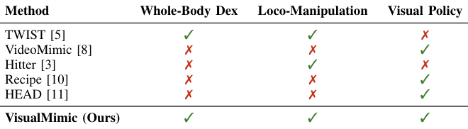
real-world sensor noise.
核对原版排版
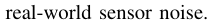
真实世界的传感器噪声。
Due to the exploration nature of RL, we find that the high-level policy training is not stable when the high-level policies explore the action space that is beyond the human motion space (HMS) present in training motion datasets. We adopt two strategies to alleviate this problem: 1) injecting noise during training the low-level policy to help it adapt to potentially noisy commands from the high-level policy, and 2) clipping actions from the high-level policy to keep them within the feasible HMS.
核对原版排版
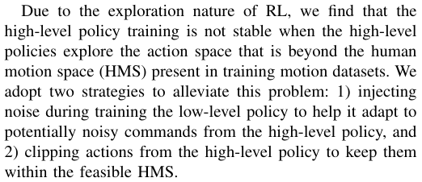
由于强化学习的探索本质，我们发现当高层策略探索超出训练动作数据集中存在的人类动作空间（HMS）的动作空间时，高层策略的训练并不稳定。我们采用两种策略来缓解该问题：1) 在训练底层策略时注入噪声，以帮助其适应来自高层策略的潜在噪声指令；2) 对高层策略的动作进行截断裁剪，使其保持在可行的 HMS 范围内。
The resulting framework, VisualMimic, enables us to obtain robust and generalizable visuomotor policies that can zero-shot transfer to the real robot, across a broad range of humanoid loco-manipulation tasks, with relatively simple task-specific reward design and without requiring paired human-object motion data. For real-world experiments (Fig. 4 and Fig. 3), we show that our humanoid robot can 1) lift a 0.5-kilogram box to a height of 1 meter, 2) push a very large box (similar height as the robot and weight 3.8 kilograms) straight and steady with its whole body, 3) dribble a football with the fluency of an experienced player, and 4) kick a box forward with alternating feet. Notably, we also show that our visuomotor policies achieve stable performance in outdoor scenarios, showing strong robustness to real-world variability such as lighting changes and uneven ground.
核对原版排版
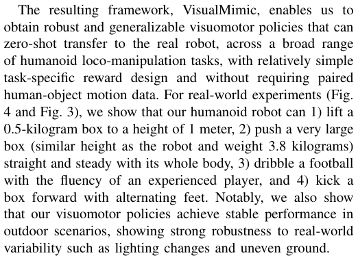
由此构建的 VisualMimic 框架使我们能够获得稳健且泛化性强的视觉运动策略，可在相对简单的特定任务奖励设计下，且无需配对的人类-物体动作数据，就能零样本迁移至真实机器人，完成广泛的人形机器人移动操作任务。在真实世界实验中（图 4 与图 3），我们展示了人形机器人能够：1) 将一个 0.5 千克的箱子举起到 1 米的高度；2) 利用全身笔直平稳地推动一个超大箱子（高度与机器人相当，重 3.8 千克）；3) 如经验丰富的球员般流畅地带球运球；4) 双脚交替向前踢箱子。值得注意的是，我们还展示了视觉运动策略在室外场景中取得了稳定的性能，对光照变化和不平整地面等现实世界的多样性表现出强大的稳健性。
II. RELATED WORK
核对原版排版
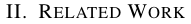
II. 相关工作
A. Learning Humanoid Loco-Manipulation
核对原版排版
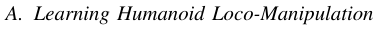
A. 人形机器人移动操作学习
Enabling humanoid robots to perform versatile locomanipulation in unstructured environments, akin to humans, is a long-standing goal for roboticists. Currently, two main pathways are being explored: (1) Imitation learning on realworld data collected via whole-body teleoperation [5]–[7], [12], [13]. While these methods demonstrate promising task versatility, they remain limited by the scarcity of high-quality data and the difficulty of scaling data collection. (2) Sim-toreal reinforcement learning based on large-scale simulation interaction [3], [8], [9], [14]–[16]. These approaches exhibit strong generalization in specific humanoid motor skills, such as terrain traversal [9], [15], box picking [16], and table tennis [3], but are restricted in task diversity compared to imitation learning. Several works remain confined to simulation; for example, HumanoidBench [14] and SkillBlender [17] adopt hierarchical frameworks similar to ours. However, their policies are often excessively jittery or depend on privileged object states, hindering successful deployment in the real world.
核对原版排版
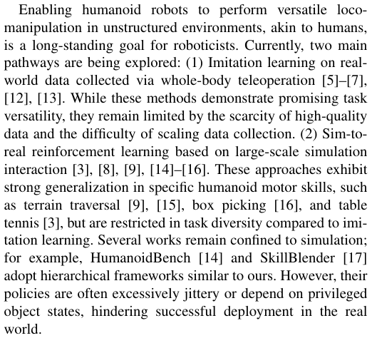
使人形机器人能够像人类一样在非结构化环境中执行多功能的移动操作，是机器人学家长期以来的目标。目前，主要有两条研究路线正在探索中：(1) 基于全身遥操作采集的真实世界数据进行模仿学习 [5]–[7], [12], [13]。尽管这些方法展现出令人期待的任务多功能性，但仍受限于高质量数据的稀缺以及数据采集规模化扩展的困难。(2) 基于大规模仿真交互的仿真到现实迁移强化学习 [3], [8], [9], [14]–[16]。这些方法在特定的人形运动技能（如地形穿越 [9], [15]、抓取箱子 [16] 以及打乒乓球 [3]）上表现出强大的泛化能力，但与模仿学习相比，其任务多样性受到限制。一些工作仍局限于仿真环境中；例如 HumanoidBench [14] 和 SkillBlender [17] 采用了与我们类似的分层框架，然而其策略往往抖动过大或依赖特权物体状态，阻碍了在真实世界中的成功部署。
展开第 2 页原版整页（含全部图表、公式与页眉页脚）
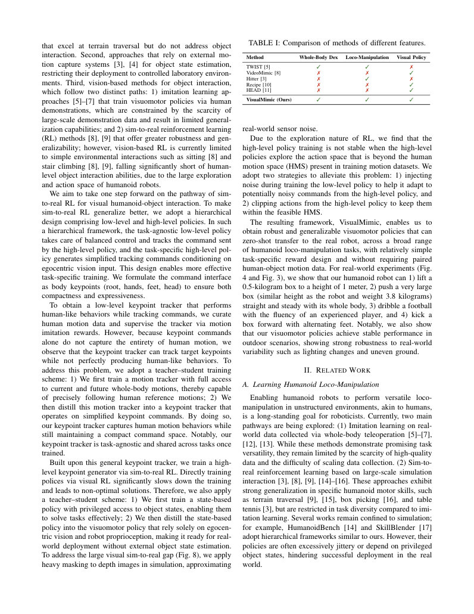
第 3 页Page 3PDF p.3
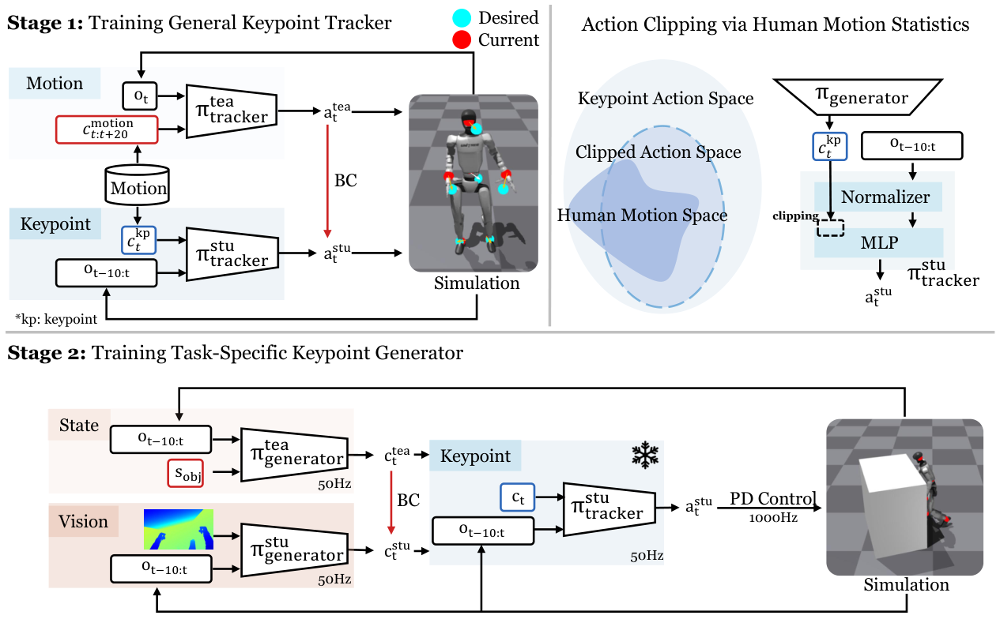
Fig. 2: VisualMimic consists of two training stages: 1) training a general keypoint tracker , where a teacher motion tracker is first trained and then distilled into a keypoint tracker with keypoint commands; and (2) training a task-specific keypoint generator , where a teacher policy with privileged object states is first trained and then distilled into a visuomotor policy. To ensure stable learning, we compute statistics with human motions and use them to clip high-level actions. Here, ot is the proprioceptive observation at time t , at is the action, and s obj represents the object state.
核对原版排版
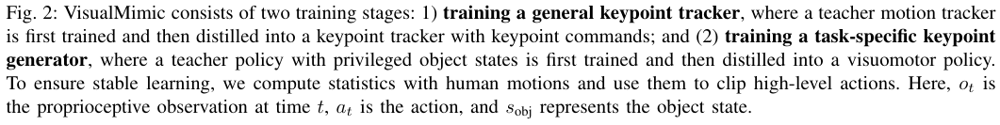
图 2：VisualMimic 包含两个训练阶段：1) 训练通用关键点跟踪器，其中首先训练教师动作跟踪器，随后将其蒸馏为接收关键点指令的关键点跟踪器；2) 训练特定任务的关键点生成器，其中首先训练具有特权物体状态的教师策略，随后将其蒸馏为视觉运动策略。为确保学习的稳定性，我们基于人类动作计算统计量，并用其对高层动作进行截断裁剪。此处，ot 为时间 t 时的本体感觉观测，at 为动作，s obj 表示物体状态。
Previous works on learning visuomotor policies for humanoid robots have typically focused either on upper-body manipulation [10], [18]–[20] or on perceptive locomotion [9], [21], [22]. More recently, VideoMimic [8] introduced a real2sim2real pipeline that enables real robots to perform environment interactions such as sitting, though their interactions remain limited to static settings like the ground or stone chairs. Other efforts, such as PDC [23], have demonstrated promising results in vision-based whole-body loco-manipulation, but only in simulation. In contrast, we propose a sim-to-real framework that enables real-world humanoid robots to achieve versatile object interaction and loco-manipulation through egocentric vision.
核对原版排版
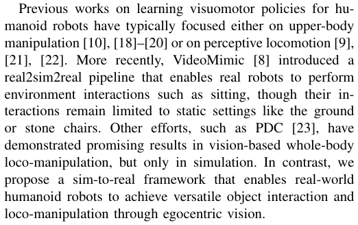
以往关于人形机器人视觉运动策略学习的研究通常要么侧重于上半身操作 [10], [18]–[20]，要么侧重于感知步态运动 [9], [21], [22]。最近，VideoMimic [8] 引入了一种 real2sim2real 流程，使真实机器人能够执行诸如坐下等环境交互，但其交互仍局限于地面或石椅等静态场景。其他研究（如 PDC [23]）在基于视觉的全身移动操作中展现了良好的效果，但仅限于仿真中。相比之下，我们提出了一个仿真到现实迁移框架，使真实人形机器人能够通过自我中心视觉实现多功能的物体交互与移动操作。
III. METHOD
核对原版排版
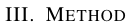
III. 方法
We propose VisualMimic, a sim-to-real framework for real-world humanoid loco-manipulation by integrating both egocentric visual perception and whole-body dexterity priors within a hierarchical framework (see Fig. 2 for overview). Our approach consists of two main components: 1) a lowlevel task-agnostic keypoint tracking policy π tracker that learns whole-body dexterity priors from human motion data, and 2) a high-level task-specific visuomotor policy π generator that drives the low-level policy based on egocentric visual inputs (Section III-B). Both policies are trained purely via largescale simulation and zero-shot transfer to the real robot. This hierarchical design facilitates fast adaptation to new tasks,
核对原版排版
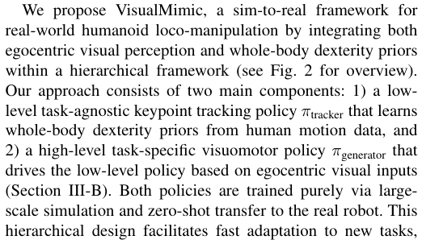
我们提出了 VisualMimic，一个通过在分层框架内整合自我中心视觉感知与全身灵巧先验来实现真实世界人形机器人移动操作的仿真到现实迁移框架（总体概述见图 2）。我们的方法包含两个主要组件：1) 任务无关的底层关键点跟踪策略 π tracker，用于从人类动作数据中学习全身灵巧先验；2) 特定任务的高层视觉运动策略 π generator，用于根据自我中心视觉输入驱动底层策略（第 III-B 节）。这两种策略均完全通过大规模仿真进行训练，并零样本迁移至真实机器人。这种分层设计有利于快速适应新任务，
since only the high-level policy requires training per task. We detail the design of two policies in this section.
核对原版排版
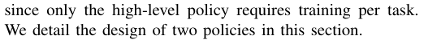
因为对于每项任务只需训练高层策略。我们在本节中详细介绍这两种策略的设计。
A. General Keypoint Tracker
核对原版排版
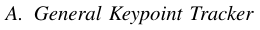
A. 通用关键点跟踪器
Although a keypoint tracking policy can be trained directly, its ability to capture motion is weaker than that of a motion tracking policy due to the much simplified commands, resulting in less human-like behaviors (Fig. 6). We address this problem by designing a two-stage teacherstudent distillation pipeline. Specifically, in the teacher training stage, a privileged teacher motion tracker is trained via RL with access to future reference motions. Then, a student keypoint tracker is trained using DAgger [24], relying solely on proprioception and keypoint commands computed from the reference frame at each time step.
核对原版排版
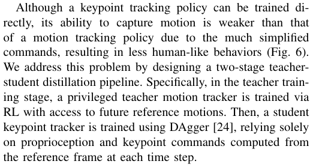
虽然可以直接训练关键点跟踪策略，但由于指令被极大简化，其捕捉动作的能力弱于动作跟踪策略，导致类人行为较差（图 6）。我们通过设计两阶段教师-学生蒸馏流程来解决这一问题。具体而言，在教师训练阶段，通过强化学习训练一个能够访问未来参考动作的特权教师动作跟踪器；随后，使用 DAgger [24] 训练学生关键点跟踪器，该跟踪器仅依赖本体感觉以及每个时间步从参考帧计算得到的关键点指令。
a) Teacher Motion Tracker: Since the teacher policy is not used during deployment, we provide it with sufficient motion and proprioceptive information so that it can track as accurately as possible. The teacher motion tracker π trackerteatakesasinputasequenceoffuturereferencemotion frames (spanning 2 seconds) and privileged proprioceptive information (e.g., foot contact forces), which allows it to anticipate upcoming goals and generate smoother motion. We implement π trackerteaasasimplethree-layerMLPandoptimize it using PPO [25], [26]. Following the reward structure in [5], our reward r motion encourages accurate motion tracking while penalizing artifacts such as jitter and foot slippage:
核对原版排版
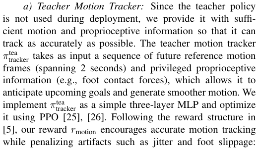
a) 教师动作跟踪器：由于教师策略在部署时不使用，我们为其提供充足的动作和本体感觉信息，以使其能够尽可能精确地进行跟踪。教师动作跟踪器 π trackertea 将未来参考动作帧序列（跨越 2 秒）以及特权本体感觉信息（如足底接触力）作为输入，这使其能够预先感知即将到来的目标并生成更平滑的动作。我们将 π trackertea 实现为一个简单的三层 MLP，并使用 PPO [25], [26] 对其进行优化。遵循 [5] 中的奖励结构，我们的奖励 r motion 鼓励精确的动作跟踪，同时惩罚抖动和脚底打滑等不良伪影：
展开第 3 页原版整页（含全部图表、公式与页眉页脚）
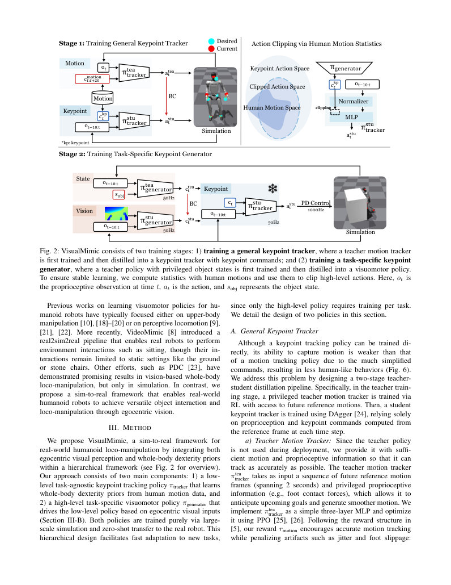
第 4 页Page 4PDF p.4
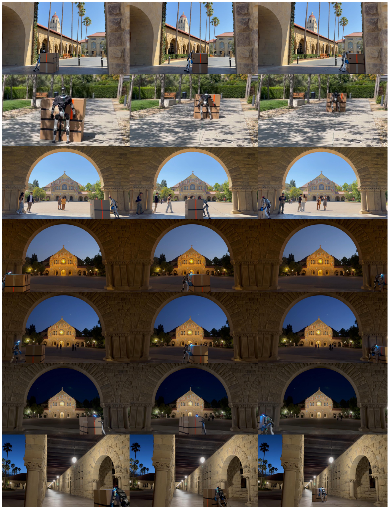
展开第 4 页原版整页（含全部图表、公式与页眉页脚）
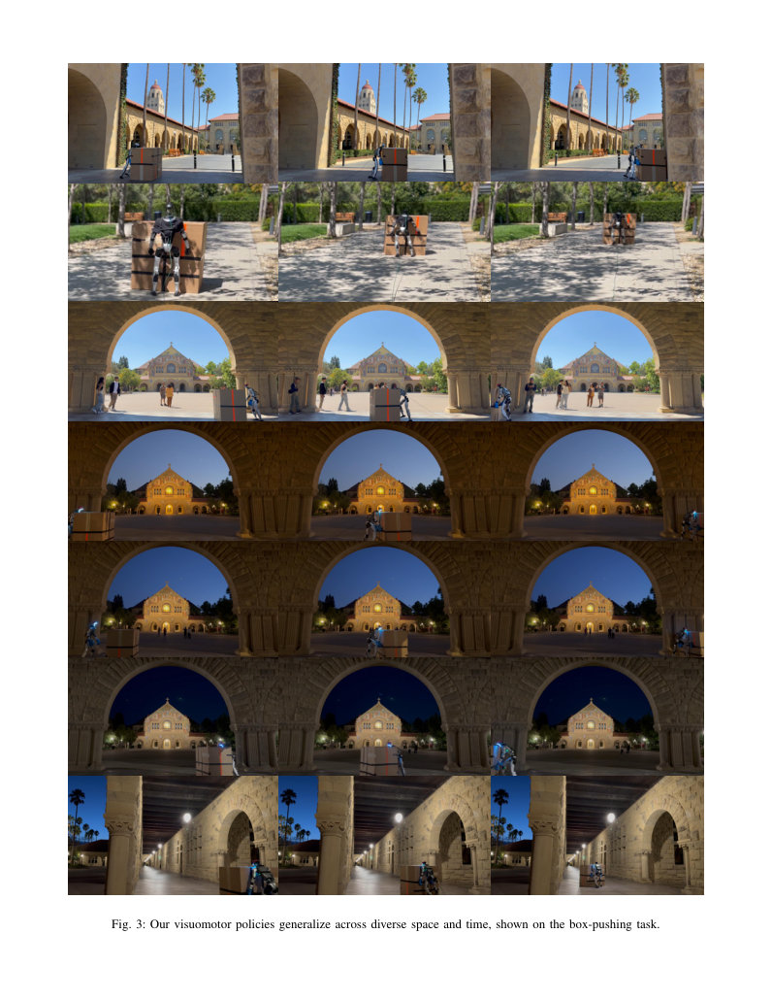
第 5 页Page 5PDF p.5
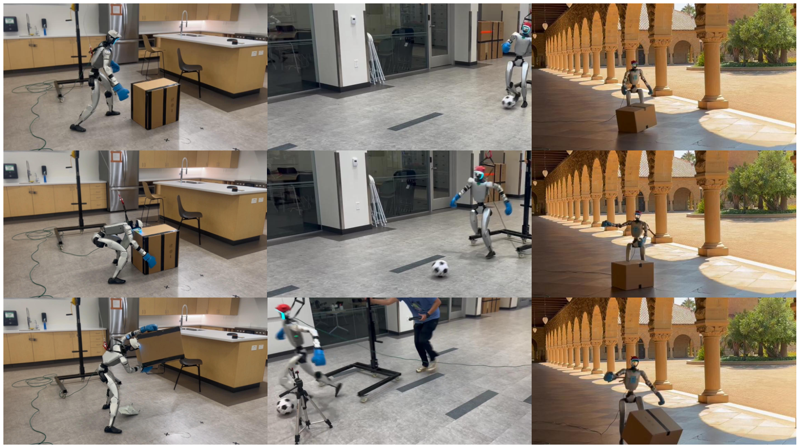
Fig. 4: Real-world deployment of visuomotor policies on a humanoid, showcasing diverse loco-manipulation tasks: Lift Box, Kick Ball, and Kick Box.
核对原版排版
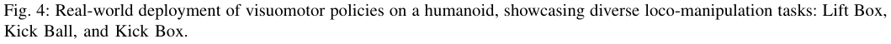
图 4：在人形机器人上真实世界部署视觉运动策略，展示多样化的移动操作任务：抬箱（Lift Box）、踢球（Kick Ball）和踢箱（Kick Box）。
r motion = r track + r penalty. Notably, we track robot body positions and root velocities in the world frame. For motion datasets, we use GMR [5], [27] to retarget AMASS [28] and OMOMO [29] into humanoid motions.
核对原版排版
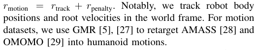
r motion = r track + r penalty。值得注意的是，我们在世界坐标系中跟踪机器人身体位置和根关节速度。对于动作数据集，我们使用 GMR [5], [27] 将 AMASS [28] 和 OMOMO [29] 重定向为人形机器人动作。
b) Student Keypoint Tracker: After obtaining π generatortea, we distill it into π generatorstuviaDAgger[24],whichtakeskey- point commands ckp t as input and is real-world deployable. We define
核对原版排版
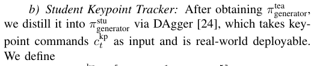
b) 学生关键点跟踪器：在获得 π generatortea 后，我们通过 DAgger [24] 将其蒸馏为 π generatorstu，它以关键点指令 ckp t 为输入，并且可在真实世界中部署。我们定义
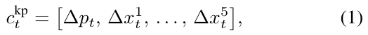
where the root position error is
核对原版排版
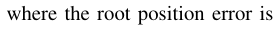
其中根关节位置误差为
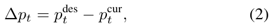
and the keypoint errors (for head, two hands, and two feet) are
核对原版排版
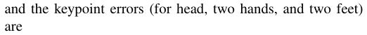
关键点误差（针对头部、双手和双脚）为
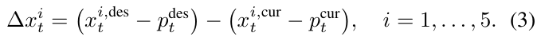
Here, “des” and “cur” denote desired (reference) and current trajectories. The keypoint tracker π trackerstureliesonlyonpro- prioception and the immediate command ckp t.Followingthe teacher tracker, it is implemented as a three-layer MLP.
核对原版排版
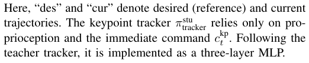
此处，“des”和“cur”分别表示期望（参考）轨迹和当前轨迹。关键点跟踪器 π trackerstu 仅依赖本体感觉和即时指令 ckp t。延续教师跟踪器的设计，它被实现为一个三层 MLP。
B. Task-Specific Keypoint Generator
核对原版排版
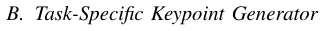
B. 特定任务关键点生成器
Once the low-level keypoint tracker is trained, the next step is to develop a high-level keypoint generator that directs the tracker to perform diverse tasks. Benefiting from the low-level tracker trained with human motion, we only need to focus on guiding the robot toward task completion by
核对原版排版
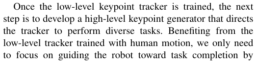
一旦底层关键点跟踪器训练完成，下一步就是开发高层关键点生成器，以引导跟踪器执行多样化的任务。得益于通过人类动作训练的底层跟踪器，我们只需专注于通过以下方式引导机器人完成任务：
designing a small set of task rewards, without the additional burden of ensuring human-like motion or collecting pairwise human-object interaction data.
核对原版排版
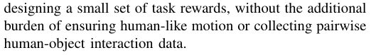
设计少量任务奖励函数，而无需承担确保类人动作或收集成对的人类-物体交互数据的额外负担。
Directly training such a keypoint generator with visual RL, however, is highly inefficient (Table III), because crucial information—such as object positions and contact forces—is only partially observable, and incorporating vision into IsaacGym further slows down the simulation. To overcome these challenges, we adopt a two-stage approach to train a taskspecific keypoint generator. In the first stage, a teacher generator with access to task-relevant object states is trained using PPO [25]. In the second stage, a student keypoint tracker that relies only on depth images for object information is distilled.
核对原版排版
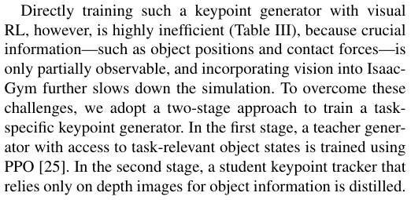
然而，直接使用视觉强化学习训练这样的关键点生成器效率极低（表 III），因为关键信息（例如物体位置和接触力）仅部分可观测，并且在 IsaacGym 中引入视觉会进一步降低仿真速度。为克服这些挑战，我们采用两阶段方法来训练特定任务的关键点生成器。在第一阶段，使用 PPO [25] 训练一个能够访问任务相关物体状态的教师生成器；在第二阶段，蒸馏出一个仅依赖深度图像获取物体信息的学生关键点跟踪器。
a) Teacher State-based Keypoint Generator: As discussed in the previous paragraph, the teacher keypoint generator leverages object states to accelerate training. The object state is defined within the environment and concatenated with proprioceptive information to form the input of the statebased keypoint generator. The generator, implemented as a three-layer MLP, is trained using PPO [25], [26] with a taskspecific reward function.
核对原版排版
a) 基于状态的教师关键点生成器：如上一段所述，教师关键点生成器利用物体状态来加速训练。物体状态在环境中定义，并与本体感觉信息拼接，构成基于状态的关键点生成器的输入。该生成器实现为一个三层 MLP，使用 PPO [25], [26] 和特定任务奖励函数进行训练。
We focus on loco-manipulation tasks such as pushing/reaching/kicking objects. Our task rewards are as follows: leftmargin=1.5em
核对原版排版
我们重点关注推/触及/踢物体等移动操作任务。我们的任务奖励如下：
- 1) Approach ( R approach): encourages contact with target point(s) on target objects. For single-point contact:
核对原版排版
- 1) 接近（R approach）：鼓励与目标物体上的目标点产生接触。对于单点接触：
第 6 页Page 6PDF p.6
and for two-point contact such as pushing a box with two hands, we use a harmonic mean for balance:
核对原版排版
而对于双手推箱子等两点接触情况，我们使用调和平均数来实现平衡：
where d ( t ) (or d 1( t ) , d 2( t )) denotes the distance between a humanoid end-effector (hand or foot) and the target point(s) at time t .
核对原版排版
其中 d ( t )（或 d 1( t ) , d 2( t )）表示在时间 t 时，人形机器人末端执行器（手或脚）与目标点之间的距离。
- 2) Forward progress ( R forward): rewards new forward motion of the object:
核对原版排版
- 2) 前向进展（R forward）：奖励物体新的前向运动：
where x obj( t ) denotes the object’s position coordinate along the forward direction.
核对原版排版
其中 x obj( t ) 表示物体沿前向的位置坐标。
- 3) Force ( R force): rewarding sufficient force exerted on the object:
核对原版排版
- 3) 作用力（R force）：奖励对物体施加足够的力：
where F obj( t ) is the force exerted on the object and F des is the desired force threshold.
核对原版排版
其中 F obj( t ) 是施加在物体上的力，F des 是期望的力阈值。
Besides, we have the following terms on regularizing the task behavior of the policy: leftmargin=1.5em
核对原版排版
此外，我们包含以下用于正则化策略任务行为的项：
1) Look at object ( R look): encourages the robot to face the object:
核对原版排版
1) 朝向物体（R look）：鼓励机器人面向物体：
ˆ f body denotes the unit vector of the humanoid’s facing direction, and dˆ obj is the unit vector pointing from the humanoid toward the target object.
核对原版排版
ˆ f body 表示人形机器人朝向的单位向量，dˆ obj 是从人形机器人指向目标物体的单位向量。
2) Drift ( R drift): penalizes lateral deviation:
核对原版排版
2) 漂移（R drift）：惩罚横向偏差：
y obj( t ) denote the object’s position components along the lateral direction.
核对原版排版
y obj( t ) 表示物体沿横向的位置分量。
b) Student Vision-based Keypoint Generator: Since object states are unavailable during deployment, the state-based keypoint generator π generatorteaisdistilledintoastudentkey- point generator that relies solely on visual observations and proprioceptive inputs. Since RGB images have significant sim-to-real gaps, we use depth images as the only visual modality. The depth input is processed by a CNN encoder, whose output is then concatenated with proprioceptive features and passed through an MLP. The student keypoint generator is distilled using DAgger [24].
核对原版排版
b) 基于视觉的学生键点生成器：由于在部署期间无法获取物体状态，基于状态的键点生成器〔行内公式见原版〕被蒸馏为仅依赖视觉观测和本体感受输入的学生键点生成器。由于 RGB 图像存在显著的仿真到现实迁移差距，我们使用深度图像作为唯一的视觉模态。深度输入由 CNN 编码器处理，其输出随后与本体感受特征拼接，并传入 MLP。学生键点生成器使用 DAgger [24] 进行蒸馏。
C. Clipping Action Space to Human Motion Space
核对原版排版
C. 将动作空间裁剪至人类运动空间
We find that it is hard to maintain the training stability of π generator even though we use the compact command space, because RL needs heavy exploration during training and the exploration easily goes beyond a feasible space of keypoint commands extracted from human motions. We refer to this feasible space as the Human Motion Space (HMS). To alleviate the problem of action exploration beyond the HMS, we propose the following two techniques.
核对原版排版
我们发现，即使使用了紧凑的指令空间，也很难维持 π generator 的训练稳定性，因为强化学习在训练期间需要大量探索，而这种探索极易超出从人类运动中提取的关键点指令的可行空间。我们将该可行空间称为人类运动空间（Human Motion Space, HMS）。为了缓解动作探索超出 HMS 的问题，我们提出了以下两种技术。
a) Noised Keypoint Commands for Low-Level Student Training: To enhance the robustness of the low-level policy and expand the range of Human Motion Space, we inject multiplicative noise into each dimension of the keypoint command during training. Formally, the noised command is defined as X noised = X · λi, ∀i ∈{ 1 , . . . , n}, λi ∼ U (0 . 5 , 1 . 5), where X denotes the original command and λi is sampled independently from a uniform distribution. We set the relative noise level to 50%, which is large enough to diversify keypoint commands while preserving motion signals. Empirically, this strategy significantly benefits the subsequent training of the keypoint generator (Fig. 9a).
核对原版排版
a) 用于低层学生网络训练的带噪关键点指令：为了增强低层策略的鲁棒性并扩大人类运动空间的范围，我们在训练期间向关键点指令的每个维度注入乘性噪声。形式上，加噪指令定义为 X noised = X · λi, ∀i ∈{ 1 , . . . , n}, λi ∼ U (0 . 5 , 1 . 5)，其中 X 表示原始指令，λi 独立采样自均匀分布。我们将相对噪声水平设置为 50%，该强度足够大以丰富关键点指令的多样性，同时保留运动信号。实验表明，该策略显著有益于后续关键点生成器的训练（Fig. 9a）。
b) Action Clip for High-Level Policies: Besides injecting noise for increasing robustness, we further regularize the output of π generator. To this end, we first estimate the the HMS boundary using the low-level policy input normalizer, and then apply action clip to constrain the high-level policy output within this range. Specifically, each input dimension is modeled as a Gaussian distribution, and the feasible output range for high-level policy is defined as µ ± 1 . 64 σ , which covers approximately 90% of the probability mass. The mean µ and standard deviation σ are recorded during low-level policy training. Fig. 9b shows that action clip significantly stabilizes the training of the keypoint generator.
核对原版排版
b) 高层策略的动作裁剪：除了注入噪声以增强鲁棒性之外，我们进一步对 π generator 的输出进行正则化。为此，我们首先使用低层策略输入归一化器估计 HMS 的边界，然后应用动作裁剪将高层策略的输出约束在该范围内。具体而言，每个输入维度被建模为高斯分布，高层策略的可行输出范围定义为 µ ± 1 . 64 σ，其覆盖了约 90% 的概率质量。均值 µ 和标准差 σ 在低层策略训练期间记录。Fig. 9b 表明动作裁剪显著稳定了关键点生成器的训练。
D. Real World Deployment
核对原版排版
D. 真实世界部署
a) Vision-Based Sim-to-Real Transfer: We observe that the depth images from the RealSense camera are highly noisy. To mitigate this, we apply spatial and temporal filters to smooth the real-world depth images. As shown in Fig. 8, even after smoothing, a significant gap remains between simulated and real-world depth images. To address this issue, we apply heavy random masking during training to better approximate real-world visual noise. Specifically, with 20% probability we apply a fixed bottom-left white mask, and with 10% probability each we add up to six independently sampled rectangular masks. These masks are filled with white, black, or gray values, where gray is drawn uniformly from 0 to 1. Each mask covers up to 30 × 30 pixels on an 80 × 45 frame (25% of the image). Without such masking, the robot exhibits unstable behaviors during deployment. We further notice that the angle of RealSense camera on Unitree G1 has slight drift as the neck is not fixed stably. To account for this effect, we apply randomization on the orientation of the robot camera view by up to ± 5◦ .
核对原版排版
a) 基于视觉的仿真到现实迁移：我们观察到来自 RealSense 相机的深度图像存在很大噪声。为了缓解这一问题，我们应用空间和时间滤波器来平滑真实世界的深度图像。如图 Fig. 8 所示，即使经过平滑，仿真与真实世界的深度图像之间仍存在显著差距。为了解决这个问题，我们在训练期间应用了高强度的随机掩码，以更好地近似真实世界的视觉噪声。具体而言，我们以 20% 的概率应用一个固定的左下角白色掩码，并各自以 10% 的概率添加最多六个独立采样的矩形掩码。这些掩码填充有白色、黑色或灰色值，其中灰色值在 0 到 1 之间均匀采样。每个掩码在 80 × 45 帧上覆盖最多达 30 × 30 像素（占图像的 25%）。如果没有这种掩码处理，机器人在部署期间会表现出不稳定行为。我们还注意到，Unitree G1 上的 RealSense 相机角度存在轻微漂移，因为颈部固定不够稳固。为了解决这一影响，我们对机器人相机视角的朝向应用了最多达 ± 5◦ 的随机化。
b) Safe Real-World Deployment via Binary Commands: In real-world deployment, it is crucial for the robot to start/pause/end safely during task execution, as simply terminating the program may cause it to fall and get damaged. Therefore, we introduce a binary command signal (0 or 1) that instructs the robot to either pause or execute the task. The robot can freely switch between the two states and always starts in the pause state. We train this behavior with such reward design: when the command is 0, the task reward is disabled, and when the command is 1, the pause reward is disabled. The pause reward corresponds to tracking a stationary standing motion. Both commands are sampled with 50% probability.
核对原版排版
b) 通过二值指令实现安全的真实世界部署：在真实世界部署中，机器人在任务执行期间能够安全地启动/暂停/结束至关重要，因为直接终止程序可能导致机器人摔倒并受损。因此，我们引入了一个二值指令信号（0 或 1），指示机器人暂停或执行任务。机器人可以在这两种状态之间自由切换，并且始终在暂停状态下启动。我们通过如下奖励设计来训练这种行为：当指令为 0 时，禁用任务奖励；当指令为 1 时，禁用暂停奖励。暂停奖励对应于跟踪静止站立动作。两个指令均以 50% 的概率进行采样。
第 7 页Page 7PDF p.7
Fig. 5: Visuomotor policies perform diverse loco-manipulation tasks in simulation: from left to right, Balance Ball, Push Cube, Reach Box, Large Kick.
核对原版排版
Fig. 5: 视觉运动策略在仿真中执行多样的移动操作任务：从左至右分别为 Balance Ball、Push Cube、Reach Box、Large Kick。
IV. EXPERIMENTS AND ANALYSIS
核对原版排版
IV. 实验与分析
In this section, we perform a series of experiments aimed at addressing the following questions: leftmargin=5pt
核对原版排版
在本节中，我们进行了一系列实验，旨在回答以下问题：
- Q1: Does VisualMimic enable effective training of humanoids to perform diverse tasks in a human-like manner?
核对原版排版
- Q1：VisualMimic 是否能够有效训练人形机器人以类人方式执行多样化任务？
- Q2: Can policies trained with VisualMimic transfer robustly to the real world?
核对原版排版
- Q2：使用 VisualMimic 训练的策略能否鲁棒地迁移到真实世界？
- Q3: How effectively does our framework demonstrate whole-body dexterity?
核对原版排版
- Q3：我们的框架展示全身灵巧性的效果如何？
- Q4: How well does VisualMimic utilize vision for object interaction?
核对原版排版
- Q4：VisualMimic 利用视觉进行物体交互的效果如何？
- Q5: Are design choices of VisualMimic all necessary for the success of the system?
核对原版排版
- Q5：VisualMimic 的各项设计选择对于系统的成功是否都是必需的？
A. Q1: Does VisualMimic enable effective training of humanoids to perform diverse tasks in a human-like manner?
核对原版排版
A. Q1：VisualMimic 是否能够有效训练人形机器人以类人方式执行多样化任务？
We design the following tasks in simulation: leftmargin=5pt
核对原版排版
我们在仿真中设计了以下任务：
Push Box : Push a 30′′ × 40′′ × 40′′ , 4 kg box (friction 0.5–2.0).
核对原版排版
Push Box：推一个尺寸为 30′′ × 40′′ × 40′′、重 4 kg 的箱子（摩擦系数 0.5–2.0）。
Kick Box : Kick a 15′′ × 20′′ × 20′′ , 0.5 kg box.
核对原版排版
Kick Box：踢一个尺寸为 15′′ × 20′′ × 20′′、重 0.5 kg 的箱子。
Lift Box : Lift a 15′′ × 20′′ × 20′′ , 0.5 kg box.
核对原版排版
Lift Box：举起一个尺寸为 15′′ × 20′′ × 20′′、重 0.5 kg 的箱子。
Reach Box : Run to a 30′′ × 40′′ × 40′′ box.
核对原版排版
Reach Box：跑向一个尺寸为 30′′ × 40′′ × 40′′ 的箱子。
Large Kick : Strongly kick a 15′′ × 20′′ × 20′′ , 0.5 kg box. Kick Ball : Dribble a football.
核对原版排版
Large Kick：强力踢一个尺寸为 15′′ × 20′′ × 20′′、重 0.5 kg 的箱子。Kick Ball：运足球。
- Balance Ball : Balance with one foot on a football. Push Cube : Push an 8′′ cube on a tabletop to target.
核对原版排版
- Balance Ball：单脚踩在足球上保持平衡。Push Cube：在桌面上将一个 8′′ 的立方体推向目标。
We evaluate each task using three metrics (TABLE II), with definitions provided in the caption. The choice of metrics follows the reward design of each task. For instance, in Push Box, the reward encourages forward motion along the x-axis while penalizing lateral drift; thus, we report Forward and Drift as metrics. Our framework achieves strong performance and successfully completes all tasks. Our vision-based policy can push a 3.8-kilogram box, comparable in size to the robot, an average of 37 meters per minute. It can also dribble a football an average of 135 meters per minute, with 121 meters forward, indicating both straightness and robustness. This performance stems from our hierarchical design, which decomposes the problem into training a lowlevel motion tracker and a high-level motion generator.
核对原版排版
我们使用三项指标来评估每个任务（TABLE II），其定义见表格标题。指标的选择遵循各任务的奖励设计。例如，在 Push Box 中，奖励鼓励沿 x 轴向前运动，同时惩罚横向漂移；因此，我们将 Forward 和 Drift 作为评估指标进行报告。我们的框架取得了优越的性能并成功完成了所有任务。我们基于视觉的策略可以推动一个与机器人尺寸相当、重 3.8 千克的箱子平均每分钟前进 37 米。它还能以平均每分钟 135 米的速度运足球，其中向前移动 121 米，展现了极佳的直线行进性与鲁棒性。这种出色的性能源于我们的分层设计，该设计将问题分解为训练低层动作跟踪器和高层动作生成器。
Fig. 6: Box-kicking behaviors. With our teacher–student training (ours, top), the humanoid can mimic human-like motion, while training without it leads to non-human-like motion (bottom).
核对原版排版
Fig. 6: 踢箱子行为。采用我们的教师–学生训练（ours，上图），人形机器人能够模仿类人动作；而没有该训练则会导致非类人动作（下图）。
B. Q2: Can policies trained with VisualMimic transfer robustly to the real world?
核对原版排版
B. Q2：使用 VisualMimic 训练的策略能否鲁棒地迁移到真实世界？
We deploy our visuomotor policies on the Unitree G1 humanoid robot equipped with its onboard RealSense D435i camera. The policies are evaluated on four tasks (Lift Box, Kick Ball, Kick Box, and Push Box) and all transfer successfully from simulation to the real world (Fig. 4 and Fig. 3). The robot can lift a box from the ground and maintain a stable hold, dribble a football forward with a human-like pose, kick a box in a coordinated manner, and push a large box straight and steadily. Beyond controlled laboratory settings, we also conducted outdoor experiments, in which the policies exhibit robustness to diverse real-world factors (Fig. 3), including fluctuating lighting, irregular ground surfaces, and environmental distractions in the surroundings. These results confirm that our framework enables reliable deployment on physical hardware, allowing the humanoid to perform diverse whole-body loco-manipulation tasks. Supplementary videos are provided.
核对原版排版
我们将视觉运动策略部署在配备机载 RealSense D435i 相机的 Unitree G1 人形机器人上。这些策略在四项任务（Lift Box、Kick Ball、Kick Box 和 Push Box）上进行了评估，且均成功从仿真迁移到了真实世界（Fig. 4 和 Fig. 3）。机器人能够从地面抱起箱子并保持稳定握持，以类人的姿态向前带足球，协调地踢箱子，以及平稳笔直地推动大箱子。除了受控的实验室环境外，我们还进行了室外实验，其中策略对各种现实世界因素表现出鲁棒性（Fig. 3），包括波动的光照、不规则的地面以及周围的环境干扰。这些结果证实，我们的框架能够在物理硬件上实现可靠部署，使人形机器人能够执行多样化的全身移动操作任务。论文提供了补充视频。
C. Q3: How effectively does our framework demonstrate whole-body dexterity?
核对原版排版
C. Q3：我们的框架展示全身灵巧性的效果如何？
Fig. 4 and 5 show that our method enables the robot to interact with objects using its entire body, including the lower limbs. We also observe flexible use of different body parts within the same task (Fig. 7), demonstrating that our method enables adaptive whole-body strategies tailored to environment conditions.
核对原版排版
Fig. 4 和 5 表明，我们的方法使机器人能够使用包括下肢在内的整个身体与物体进行交互。我们还在同一任务中观察到了对不同身体部位的灵活运用（Fig. 7），表明我们的方法能够实现根据环境条件量身定制的自适应全身策略。
第 8 页Page 8PDF p.8
TABLE II: Evaluation of teacher and student policies with and without vision across all tasks in simulation. Results are averaged over 1-minute rollouts across 3 seeds (4096 rollouts for state-based, 512 for vision-based). Metrics include: Distance (object Euclidean displacement), Forward (object displacement in the intended forward direction), Drift (object lateral deviation orthogonal to the forward axis), Height (box lift height), Box Fall Rate (percentage of drops), Alive (time before termination), Velocity (forward speed), Collision Rate (percentage of collisions), Force (average force applied on the ball), Foot Fall Rate (percentage of failed foot placements), Error (final distance from target), and Finish Time (time to task completion; set to episode length if the task is not completed). The best performing deployable method is highlighted.
核对原版排版
TABLE II：仿真中所有任务上有/无视觉的教师与学生策略评估。结果是对 3 个随机种子在 1 分钟 rollout/轨迹展开上的平均值（基于状态的方法为 4096 次 rollout/轨迹展开，基于视觉的方法为 512 次）。评估指标包括：Distance（物体欧氏位移）、Forward（物体在目标前进方向上的位移）、Drift（与前进轴正交的物体横向偏离）、Height（箱子提起高度）、Box Fall Rate（掉落百分比）、Alive（终止前的时间）、Velocity（前进速度）、Collision Rate（碰撞百分比）、Force（施加在球上的平均力）、Foot Fall Rate（落脚失败的百分比）、Error（距目标的最终距离）以及 Finish Time（任务完成时间；若任务未完成，则设为回合长度）。性能最佳的可部署方法予以突出显示。
Fig. 7: Whole-body dexterity in Push Box. Policies trained in different conditions exhibit distinct whole-body behaviors: on low-friction ground ( µ = 0 . 5), it bends down to push with both hands; on high friction ( µ = 1 . 5), it leans forward to push with its shoulder for greater force; when the box is lower, it switches to one-handed pushing while the other arm swings with its stride.
核对原版排版
Fig. 7：Push Box 中的全身灵巧性。在不同条件下训练的策略表现出截然不同的全身行为：在低摩擦地面上（ µ = 0 . 5），它俯身用双手推；在高摩擦地面上（ µ = 1 . 5），它身体前倾用肩膀推以获得更大的力量；当箱子较低时，它切换为单手推，另一只手臂则随步伐摆动。
To investigate the source of this dexterity, we train a variant of VisualMimic that uses only upper-body keypoints as commands instead of our 6-point design. This variant fails to effectively engage the feet, resulting in poor performance on tasks such as Balance Ball: it struggles to place the foot on top of the ball and instead consistently kicks it away (see supplementary videos).
核对原版排版
为了探究这种灵巧性的来源，我们训练了 VisualMimic 的一个变体，该变体仅使用上半身关键点作为指令，而非我们的 6 点设计。该变体未能有效地利用双脚，导致在 Balance Ball 等任务上表现不佳：它很难将脚踩在球顶上，反而总是一脚将球踢开（见补充视频）。
D. Q4: How well does VisualMimic utilize vision for object interaction?
核对原版排版
D. Q4：VisualMimic 如何有效地利用视觉进行物体交互？
All our tasks rely heavily on robot egocentric vision, where object positions are heavily randomized and robots can only perceive them via vision. To directly assess the role of vision, we train a variant of our policy distilled without visual input (TABLE II). This variant shows a substantial performance drop compared to its vision-enabled counterpart, highlighting the effectiveness of VisualMimic in leveraging vision for robust and adaptive object interaction.
核对原版排版
我们的所有任务都高度依赖机器人的自我中心视觉，其中物体位置具有高度随机性，机器人只能通过视觉来感知它们。为了直接评估视觉的作用，我们训练了在没有视觉输入的情况下蒸馏出的策略变体（TABLE II）。与启用视觉的对应版本相比，该变体的性能出现了大幅下降，凸显了 VisualMimic 利用视觉实现鲁棒且自适应的物体交互的有效性。
E. Q5: Are design choices of VisualMimic all necessary for the success of the system?
核对原版排版
E. Q5：VisualMimic 的设计选择对于系统的成功是否都是必不可少的？
To evaluate the contribution of key design components, we conduct extensive ablation studies on three tasks in simulation (TABLE III). We compare against the following variants of VisualMimic: leftmargin=5pt
核对原版排版
为了评估关键设计组件的贡献，我们在仿真中的三项任务上进行了广泛的消融实验（TABLE III）。我们将 VisualMimic 与以下变体进行了对比：leftmargin=5pt
w/o noise : Distill a low-level keypoint tracker without adding noise to keypoint commands, then train the high-level policy on top.
核对原版排版
w/o noise：在不对关键点指令添加噪声的情况下蒸馏低层关键点跟踪器，然后在此基础上训练高层策略。
Sim Sim + Mask Real
核对原版排版
Sim（仿真） Sim + Mask（仿真+掩码） Real（真实）
Fig. 8: Egocentric vision of the humanoid robot. In simulation, random masking is applied to approximate realworld noise. Real-world images are processed with spatial and temporal filtering.
核对原版排版
Fig. 8：人形机器人的自我中心视觉。在仿真中，应用随机掩码来近似真实世界的噪声。真实世界图像则通过空间和时间滤波进行处理。
w/o clip : Use the same low-level keypoint tracker, but remove action clipping in the high-level policy. DoF as Interface : Distill a low-level tracker with a 23-DoF interface, then train the high-level policy on top.
核对原版排版
w/o clip：使用相同的低层关键点跟踪器，但移除高层策略中的动作截断（action clipping）。DoF as Interface：蒸馏一个具有 23 自由度（23-DoF）接口的低层跟踪器，然后在此基础上训练高层策略。
Local-Frame Tracker : Train the low-level motion and keypoint tracker with inputs and rewards computed in the local frame, then train the high-level policy on top. Visual RL : Directly train the visuomotor policy with RL for the same number of steps as the combined teacher–student training in the default setup.
核对原版排版
Local-Frame Tracker：使用在局部坐标系中计算的输入和奖励来训练低层运动与关键点跟踪器，然后在此基础上训练高层策略。Visual RL：直接使用强化学习训练视觉运动策略，训练步数与默认设置中教师-学生联合训练的总步数相同。
For w/o noise and DoF as Interface, the tracker is distilled from the same teacher policy as in our method. Moreover, for all baselines, only one component is altered while all others are kept identical. Removing multiple components (e.g., DoF interface without noise) leads to even worse performance than single-component variants. All methods share the same reward design and training parameters.
核对原版排版
对于 w/o noise 和 DoF as Interface，跟踪器是从与我们方法中相同的教师策略中蒸馏出来的。此外，对于所有基线，仅改动一个组件，而所有其他组件保持相同。移除多个组件（例如无噪声的 DoF 接口）会导致比单组件变体更差的性能。所有方法共享相同的奖励设计和训练参数。
Metrics for the three tasks are reported in TABLE III, with training curves in Fig. 9. It is observed that none of the baselines matches the performance of VisualMimic. We find that removing noise degrades performance in Kick Box and Kick Ball, and causes complete failure in Push Box (Fig. 9a). Eliminating action clipping leads to return collapse in later training stages across all tasks (Fig. 9b), likely because the high-level action space becomes excessively large. Using a DoF interface significantly reduces performance in Push Box and Kick Box, and prevents learning in Kick Ball (Fig. 9c). Training trackers in the local frame also results in substantial drops (TABLE III), as global-frame tracking better reduces drift and facilitates high-level training. Finally, Direct Visual
核对原版排版
三项任务的评估指标在 TABLE III 中汇报，训练曲线见 Fig. 9。可以观察到，没有任何基线能够匹敌 VisualMimic 的性能。我们发现，去除噪声会降低在 Kick Box 和 Kick Ball 中的性能，并导致在 Push Box 中完全失败（Fig. 9a）。消除动作截断会导致所有任务在训练后期出现回报崩溃（Fig. 9b），这可能是因为高层动作空间变得过大。使用 DoF 接口显著降低了在 Push Box 和 Kick Box 中的性能，并阻碍了在 Kick Ball 中的学习（Fig. 9c）。在局部坐标系中训练跟踪器同样导致了大幅下滑（TABLE III），因为全局坐标系跟踪能够更好地减少漂移并促进高层训练。最后，Direct Visual
第 9 页Page 9PDF p.9
TABLE III: Ablation study of VisualMimic on three tasks in simulation. Experiment settings and metrics follow Table II. Blind denotes policies trained without visual input; here, Ours w/o vision is the student policy distilled without vision.
核对原版排版
TABLE III：VisualMimic 在仿真中三项任务上的消融实验。实验设置与指标同 Table II。Blind 表示在没有视觉输入的情况下训练的策略；此处，Ours w/o vision 是在无视觉条件下蒸馏出的学生策略。
Fig. 9: Training curves of our state-based keypoint generator compared with its variants.
核对原版排版
Fig. 9：我们基于状态的关键点生成器与其各变体的训练曲线对比。
RL fails entirely in Kick Box and Kick Ball.
核对原版排版
RL 在 Kick Box 和 Kick Ball 中彻底失败。
Besides, we find that removing teacher–student training for the low-level tracker, i.e. , single-stage RL, produces highly unnatural behaviors during keypoint generator training (Fig. 6), underscoring the importance of the teacher-student framework for human-like keypoint tracking.
核对原版排版
此外，我们发现，对于低层跟踪器若去除教师-学生训练（即单阶段强化学习），会在关键点生成器训练期间产生高度不自然的行为（Fig. 6），这凸显了教师-学生框架对于类人关键点跟踪的重要性。
V. CONCLUSIONS AND LIMITATIONS
核对原版排版
V. 结论与局限性
In this work, we presented VisualMimic, a visual sim-toreal framework that integrates visual perception with wholebody control for humanoid loco-manipulation and object interaction. By combining a high-level keypoint generator with a low-level general keypoint tracker, our approach enables humanoid robots to robustly perform diverse locomanipulation tasks directly from visual and proprioceptive inputs. Experiments in both simulation and the real world
核对原版排版
在本工作中，我们提出了 VisualMimic，这是一个将视觉感知与全身控制相结合的视觉仿真到现实迁移（sim-to-real）框架，用于人形机器人的移动操作和物体交互。通过将高层关键点生成器与低层通用关键点跟踪器相结合，我们的方法使人形机器人能够直接根据视觉和本体感受输入，鲁棒地执行多样化的移动操作任务。在仿真和真实世界中的实验
demonstrate that VisualMimic enables robust deployment from simulation to the real robot.
核对原版排版
表明 VisualMimic 能够实现从仿真到真实机器人的鲁棒部署。
Limitations. While our hierarchical design generalizes across a range of loco-manipulation tasks, more complex interactions involving deformable objects or human collaboration remain unexplored. Besides, though sim-to-real transfer has been effective in our tested scenarios, further scaling to long-horizon tasks and diverse real-world environments may require additional advances in domain randomization and adaptive control. We leave these directions for future research.
核对原版排版
局限性。尽管我们的分层设计能够泛化到一系列移动操作任务中，但涉及可变形物体或人类协作的更复杂交互仍有待探索。此外，尽管仿真到现实迁移在我们的测试场景中行之有效，但若要进一步扩展到长程任务和多样化的真实世界环境中，可能需要在域随机化和自适应控制方面取得更多进展。我们将这些方向留待未来研究。
ACKNOWLEDGMENTS
核对原版排版
致谢
We would like to thank all members of the CogAI group and The Movement Lab from Stanford University for their support. We also thank the Stanford Robotics Center for providing the experiment space. This work is in part supported by Stanford Institute for Human-Centered AI (HAI), Stanford Robotics Center (SRC), ONR MURI N0001422-1-2740, ONR MURI N00014-24-1-2748, and NSF:FRR 215385.
核对原版排版
我们感谢来自斯坦福大学 CogAI 小组和 The Movement Lab 的所有成员给予的支持。我们还要感谢斯坦福机器人中心（Stanford Robotics Center）提供实验场地。本项工作得到了斯坦福以人为本人工智能研究院（HAI）、斯坦福机器人中心（SRC）、ONR MURI N0001422-1-2740、ONR MURI N00014-24-1-2748 以及 NSF:FRR 215385 的部分资助。
REFERENCES
核对原版排版
REFERENCES
- [1] I. Radosavovic, T. Xiao, B. Zhang, T. Darrell, J. Malik, and K. Sreenath, “Real-world humanoid locomotion with reinforcement learning,” arXiv:2303.03381 , 2023.
核对原版排版
- [1] I. Radosavovic, T. Xiao, B. Zhang, T. Darrell, J. Malik, and K. Sreenath, “Real-world humanoid locomotion with reinforcement learning,” arXiv:2303.03381 , 2023.
- [2] I. Radosavovic, B. Zhang, B. Shi, J. Rajasegaran, S. Kamat, T. Darrell, K. Sreenath, and J. Malik, “Humanoid locomotion as next token prediction,” arXiv:2402.19469 , 2024.
核对原版排版
- [2] I. Radosavovic, B. Zhang, B. Shi, J. Rajasegaran, S. Kamat, T. Darrell, K. Sreenath, and J. Malik, “Humanoid locomotion as next token prediction,” arXiv:2402.19469 , 2024.
- [3] Z. Su, B. Zhang, N. Rahmanian, Y. Gao, Q. Liao, C. Regan, K. Sreenath, and S. S. Sastry, “Hitter: A humanoid table tennis robot via hierarchical planning and learning,” arXiv preprint arXiv:2508.21043 , 2025.
核对原版排版
- [3] Z. Su, B. Zhang, N. Rahmanian, Y. Gao, Q. Liao, C. Regan, K. Sreenath, and S. S. Sastry, “Hitter: A humanoid table tennis robot via hierarchical planning and learning,” arXiv preprint arXiv:2508.21043 , 2025.
- [4] H. Xue, C. Pan, Z. Yi, G. Qu, and G. Shi, “Full-order sampling-based mpc for torque-level locomotion control via diffusion-style annealing,” in 2025 IEEE International Conference on Robotics and Automation (ICRA) . IEEE, 2025, pp. 4974–4981.
核对原版排版
- [4] H. Xue, C. Pan, Z. Yi, G. Qu, and G. Shi, “Full-order sampling-based mpc for torque-level locomotion control via diffusion-style annealing,” in 2025 IEEE International Conference on Robotics and Automation (ICRA) . IEEE, 2025, pp. 4974–4981.
- [5] Y. Ze, Z. Chen, J. P. Ara´ujo, Z. ang Cao, X. B. Peng, J. Wu, and C. K. Liu, “Twist: Teleoperated whole-body imitation system,” arXiv preprint arXiv:2505.02833 , 2025.
核对原版排版
- [5] Y. Ze, Z. Chen, J. P. Ara´ujo, Z. ang Cao, X. B. Peng, J. Wu, and C. K. Liu, “Twist: Teleoperated whole-body imitation system,” arXiv preprint arXiv:2505.02833 , 2025.
- [6] Q. Ben, F. Jia, J. Zeng, J. Dong, D. Lin, and J. Pang, “Homie: Humanoid loco-manipulation with isomorphic exoskeleton cockpit,” arXiv preprint arXiv:2502.13013 , 2025.
核对原版排版
- [6] Q. Ben, F. Jia, J. Zeng, J. Dong, D. Lin, and J. Pang, “Homie: Humanoid loco-manipulation with isomorphic exoskeleton cockpit,” arXiv preprint arXiv:2502.13013 , 2025.
- [7] J. Li, X. Cheng, T. Huang, S. Yang, R. Qiu, and X. Wang, “Amo: Adaptive motion optimization for hyper-dexterous humanoid wholebody control,” Robotics: Science and Systems 2025 , 2025.
核对原版排版
- [7] J. Li, X. Cheng, T. Huang, S. Yang, R. Qiu, and X. Wang, “Amo: Adaptive motion optimization for hyper-dexterous humanoid wholebody control,” Robotics: Science and Systems 2025 , 2025.
第 10 页Page 10PDF p.10
- [8] A. Allshire, H. Choi, J. Zhang, D. McAllister, A. Zhang, C. M. Kim, T. Darrell, P. Abbeel, J. Malik, and A. Kanazawa, “Visual imitation enables contextual humanoid control,” arXiv preprint arXiv:2505.03729 , 2025.
核对原版排版
- [8] A. Allshire, H. Choi, J. Zhang, D. McAllister, A. Zhang, C. M. Kim, T. Darrell, P. Abbeel, J. Malik, and A. Kanazawa, “Visual imitation enables contextual humanoid control,” arXiv preprint arXiv:2505.03729 , 2025.
- [9] H. Wang, Z. Wang, J. Ren, Q. Ben, T. Huang, W. Zhang, and J. Pang, “Beamdojo: Learning agile humanoid locomotion on sparse footholds,” arXiv preprint arXiv:2502.10363 , 2025.
核对原版排版
- [9] H. Wang, Z. Wang, J. Ren, Q. Ben, T. Huang, W. Zhang, and J. Pang, “Beamdojo: Learning agile humanoid locomotion on sparse footholds,” arXiv preprint arXiv:2502.10363 , 2025.
- [10] T. Lin, K. Sachdev, L. Fan, J. Malik, and Y. Zhu, “Sim-to-real reinforcement learning for vision-based dexterous manipulation on humanoids,” arXiv preprint arXiv:2502.20396 , 2025.
核对原版排版
- [10] T. Lin, K. Sachdev, L. Fan, J. Malik, and Y. Zhu, “Sim-to-real reinforcement learning for vision-based dexterous manipulation on humanoids,” arXiv preprint arXiv:2502.20396 , 2025.
- [11] S. Chen, Y. Ye, Z.-A. Cao, J. Lew, P. Xu, and C. K. Liu, “Hand-eye autonomous delivery: Learning humanoid navigation, locomotion and reaching,” in 9th Annual Conference on Robot Learning , 2025.
核对原版排版
- [11] S. Chen, Y. Ye, Z.-A. Cao, J. Lew, P. Xu, and C. K. Liu, “Hand-eye autonomous delivery: Learning humanoid navigation, locomotion and reaching,” in 9th Annual Conference on Robot Learning , 2025.
- [12] T. He, Z. Luo, X. He, W. Xiao, C. Zhang, W. Zhang, K. Kitani, C. Liu, and G. Shi, “Omnih2o: Universal and dexterous humanto-humanoid whole-body teleoperation and learning,” arXiv preprint arXiv:2406.08858 , 2024.
核对原版排版
- [12] T. He, Z. Luo, X. He, W. Xiao, C. Zhang, W. Zhang, K. Kitani, C. Liu, and G. Shi, “Omnih2o: Universal and dexterous humanto-humanoid whole-body teleoperation and learning,” arXiv preprint arXiv:2406.08858 , 2024.
- [13] Z. Fu, Q. Zhao, Q. Wu, G. Wetzstein, and C. Finn, “Humanplus: Humanoid shadowing and imitation from humans,” in Conference on Robot Learning (CoRL) , 2024.
核对原版排版
- [13] Z. Fu, Q. Zhao, Q. Wu, G. Wetzstein, and C. Finn, “Humanplus: Humanoid shadowing and imitation from humans,” in Conference on Robot Learning (CoRL) , 2024.
- [14] C. Sferrazza, D.-M. Huang, X. Lin, Y. Lee, and P. Abbeel, “Humanoidbench: Simulated humanoid benchmark for whole-body locomotion and manipulation,” 2024.
核对原版排版
- [14] C. Sferrazza, D.-M. Huang, X. Lin, Y. Lee, and P. Abbeel, “Humanoidbench: Simulated humanoid benchmark for whole-body locomotion and manipulation,” 2024.
- [15] Z. Chen, X. He, Y.-J. Wang, Q. Liao, Y. Ze, Z. Li, S. S. Sastry, J. Wu, K. Sreenath, S. Gupta, and X. B. Peng, “Learning smooth humanoid locomotion through lipschitz-constrained policies,” arxiv preprint arXiv:2410.11825 , 2024.
核对原版排版
- [15] Z. Chen, X. He, Y.-J. Wang, Q. Liao, Y. Ze, Z. Li, S. S. Sastry, J. Wu, K. Sreenath, S. Gupta, and X. B. Peng, “Learning smooth humanoid locomotion through lipschitz-constrained policies,” arxiv preprint arXiv:2410.11825 , 2024.
- [16] J. Dao, H. Duan, and A. Fern, “Sim-to-real learning for humanoid box loco-manipulation,” in 2024 IEEE International Conference on Robotics and Automation (ICRA) . IEEE, 2024, pp. 16 930–16 936.
核对原版排版
- [16] J. Dao, H. Duan, and A. Fern, “Sim-to-real learning for humanoid box loco-manipulation,” in 2024 IEEE International Conference on Robotics and Automation (ICRA) . IEEE, 2024, pp. 16 930–16 936.
- [17] Y. Kuang, H. Geng, A. Elhafsi, T.-D. Do, P. Abbeel, J. Malik, M. Pavone, and Y. Wang, “Skillblender: Towards versatile humanoid whole-body loco-manipulation via skill blending,” arXiv preprint arXiv:2506.09366 , 2025.
核对原版排版
- [17] Y. Kuang, H. Geng, A. Elhafsi, T.-D. Do, P. Abbeel, J. Malik, M. Pavone, and Y. Wang, “Skillblender: Towards versatile humanoid whole-body loco-manipulation via skill blending,” arXiv preprint arXiv:2506.09366 , 2025.
- [18] Y. Ze, Z. Chen, W. Wang, T. Chen, X. He, Y. Yuan, X. B. Peng, and J. Wu, “Generalizable humanoid manipulation with improved 3d diffusion policies,” arXiv preprint arXiv:2410.10803 , 2024.
核对原版排版
- [18] Y. Ze, Z. Chen, W. Wang, T. Chen, X. He, Y. Yuan, X. B. Peng, and J. Wu, “Generalizable humanoid manipulation with improved 3d diffusion policies,” arXiv preprint arXiv:2410.10803 , 2024.
- [19] X. Cheng, J. Li, S. Yang, G. Yang, and X. Wang, “Open-television: Teleoperation with immersive active visual feedback,” arXiv preprint arXiv:2407.01512 , 2024.
核对原版排版
- [19] X. Cheng, J. Li, S. Yang, G. Yang, and X. Wang, “Open-television: Teleoperation with immersive active visual feedback,” arXiv preprint arXiv:2407.01512 , 2024.
- [20] R.-Z. Qiu, S. Yang, X. Cheng, C. Chawla, J. Li, T. He, G. Yan, D. J. Yoon, R. Hoque, L. Paulsen et al. , “Humanoid policy˜ human policy,” arXiv preprint arXiv:2503.13441 , 2025.
核对原版排版
- [20] R.-Z. Qiu, S. Yang, X. Cheng, C. Chawla, J. Li, T. He, G. Yan, D. J. Yoon, R. Hoque, L. Paulsen et al. , “Humanoid policy˜ human policy,” arXiv preprint arXiv:2503.13441 , 2025.
- [21] J. He, C. Zhang, F. Jenelten, R. Grandia, M. B¨acher, and M. Hutter, “Attention-based map encoding for learning generalized legged locomotion,” Science Robotics , vol. 10, no. 105, 2025.
核对原版排版
- [21] J. He, C. Zhang, F. Jenelten, R. Grandia, M. B¨acher, and M. Hutter, “Attention-based map encoding for learning generalized legged locomotion,” Science Robotics , vol. 10, no. 105, 2025.
- [22] J. Long, J. Ren, M. Shi, Z. Wang, T. Huang, P. Luo, and J. Pang, “Learning humanoid locomotion with perceptive internal model,” arXiv preprint arXiv:2411.14386 , 2024.
核对原版排版
- [22] J. Long, J. Ren, M. Shi, Z. Wang, T. Huang, P. Luo, and J. Pang, “Learning humanoid locomotion with perceptive internal model,” arXiv preprint arXiv:2411.14386 , 2024.
- [23] Z. Luo, C. Tessler, T. Lin, Y. Yuan, T. He, W. Xiao, Y. Guo, G. Chechik, K. Kitani, L. Fan et al. , “Emergent active perception and dexterity of simulated humanoids from visual reinforcement learning,” arXiv preprint arXiv:2505.12278 , 2025.
核对原版排版
- [23] Z. Luo, C. Tessler, T. Lin, Y. Yuan, T. He, W. Xiao, Y. Guo, G. Chechik, K. Kitani, L. Fan et al. , “Emergent active perception and dexterity of simulated humanoids from visual reinforcement learning,” arXiv preprint arXiv:2505.12278 , 2025.
- [24] S. Ross, G. Gordon, and D. Bagnell, “A reduction of imitation learning and structured prediction to no-regret online learning,” in Proceedings of the fourteenth international conference on artificial intelligence and statistics . JMLR Workshop and Conference Proceedings, 2011, pp. 627–635.
核对原版排版
- [24] S. Ross, G. Gordon, and D. Bagnell, “A reduction of imitation learning and structured prediction to no-regret online learning,” in Proceedings of the fourteenth international conference on artificial intelligence and statistics . JMLR Workshop and Conference Proceedings, 2011, pp. 627–635.
- [25] J. Schulman, F. Wolski, P. Dhariwal, A. Radford, and O. Klimov, “Proximal policy optimization algorithms,” arXiv preprint arXiv:1707.06347 , 2017.
核对原版排版
- [25] J. Schulman, F. Wolski, P. Dhariwal, A. Radford, and O. Klimov, “Proximal policy optimization algorithms,” arXiv preprint arXiv:1707.06347 , 2017.
- [26] N. Rudin, D. Hoeller, P. Reist, and M. Hutter, “Learning to walk in minutes using massively parallel deep reinforcement learning,” in Conference on Robot Learning . PMLR, 2022, pp. 91–100.
核对原版排版
- [26] N. Rudin, D. Hoeller, P. Reist, and M. Hutter, “Learning to walk in minutes using massively parallel deep reinforcement learning,” in Conference on Robot Learning . PMLR, 2022, pp. 91–100.
- [27] Y. Ze, J. P. Ara´ujo, J. Wu, and C. K. Liu, “Gmr: General motion retargeting,” 2025, gitHub repository. [Online]. Available: https://github.com/YanjieZe/GMR
核对原版排版
- [27] Y. Ze, J. P. Ara´ujo, J. Wu, and C. K. Liu, “Gmr: General motion retargeting,” 2025, gitHub repository. [Online]. Available: https://github.com/YanjieZe/GMR
- [28] N. Mahmood, N. Ghorbani, N. F. Troje, G. Pons-Moll, and M. J. Black, “Amass: Archive of motion capture as surface shapes,” in Proceedings of the IEEE/CVF international conference on computer vision , 2019, pp. 5442–5451.
核对原版排版
- [28] N. Mahmood, N. Ghorbani, N. F. Troje, G. Pons-Moll, and M. J. Black, “Amass: Archive of motion capture as surface shapes,” in Proceedings of the IEEE/CVF international conference on computer vision , 2019, pp. 5442–5451.
- [29] J. Li, J. Wu, and C. K. Liu, “Object motion guided human motion synthesis,” ACM Transactions on Graphics (TOG) , vol. 42, no. 6, pp. 1–11, 2023.
核对原版排版
- [29] J. Li, J. Wu, and C. K. Liu, “Object motion guided human motion synthesis,” ACM Transactions on Graphics (TOG) , vol. 42, no. 6, pp. 1–11, 2023.